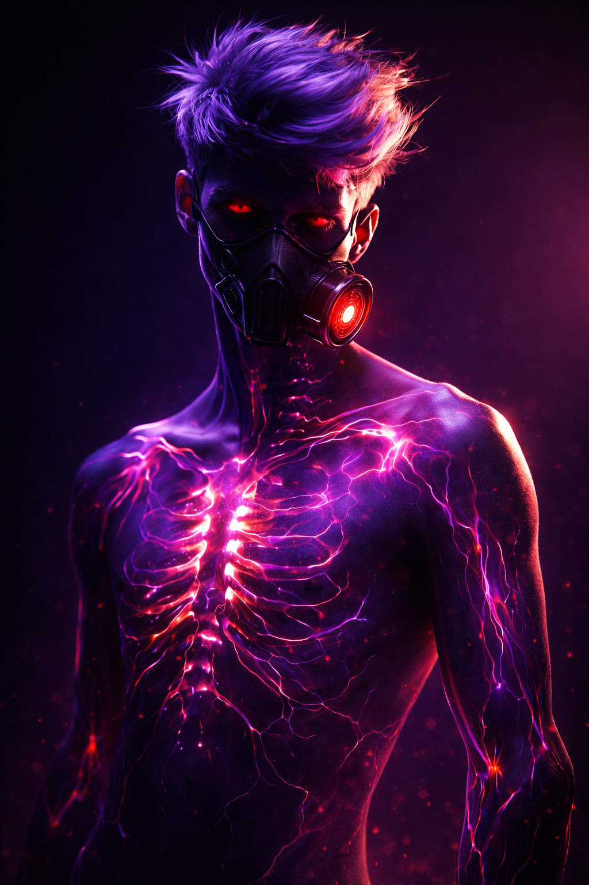

SuperheroCasper Curie / Half-Life
PLAYER CHARACTER — Do not over-document internal states or future development. This file is a GM reference for arc planning, not a character bible.
At a Glance
| Field | Value |
|---|---|
| Hero Name | Half-Life |
| Civilian Name | Casper Curie |
| Former Villain Name | Decay |
| Playbook | The Reformed |
| Age | TBD |
| A.E.G.I.S. File | AEGIS-HLF-016 — amended from prior villain classification (Decay) |
| Affiliation | Alliance — new team (Legacy of Halden City) |
| Status | Active — reformed antagonist, proving himself |
Powers
Nuclear Kinesis. Casper can absorb ionizing radiation into his body and expel it — either passively (bleeding it off as low-level ambient emission) or directionally via concentrated touch.
What this looks like in practice:
- Walks into a contaminated site and pulls the radiation out of the environment into himself — active absorption
- Can focus and discharge stored radiation through contact, making physical strikes carry radiological payload
- Passive bleed is always running at some low level; the body manages excess to stay stable
The Drawback — the Limit: Absorption has a ceiling. Push past it — too much stored at once, or held too long — and the radiation begins breaking down his own cellular structure. His body is the containment vessel, and containment vessels fail under pressure. This is not a dramatic failsafe; it is a slow, grinding cost. The damage accumulates. The question is how much he's carrying at any given time, and how long he's been carrying it.
This is the core tension of the power: it is most useful in scenarios where he should stop. Every big absorption is a bill he pays with his body.
Background
Casper Curie used to be Decay.
The details of that period are to be developed with the player — what he did, who he hurt, why he stopped. What's established: he reformed not through a dramatic confrontation or a single crisis of conscience, but through environmental remediation work. He spent time cleaning up nuclear waste dumps. Getting into contaminated ground, absorbing what was killing the soil and the water and the people downstream, and carrying it out on his own back.
That work changed him. Whether it was penance, practical application, or something that just made sense in a way that the other life didn't — that's the player's territory.
He came out of it as Half-Life.
Character Profile (GM Reference — Keep Light)
The Reformed playbook frames a character trying to prove something — to the team, to the city, or to themselves. Casper has a past that left marks, and a power that is literally corrosive if he pushes it. The thematic resonance is already in the bones: a man who absorbs what others can't safely touch, at personal cost, who used to point that capability at people.
What to give him:
- Situations where his past is relevant but not defining — where the team needs him and his history is background, not the point
- Opportunities to use the power in ways that feel meaningful (environmental stakes, civilian protection, cleanup contexts) rather than just combat delivery
- Moments where the physical cost of the power is felt, not just stated
What to avoid:
- Reducing him to "the villain who turned good" as a character note in every scene
- Resolving the Reformed arc too cleanly — the work is in the ongoing proving, not a single redemption beat
- Dictating how he feels about his past or what "reformed" means to him — that's the player's
Arc Notes
The Reformed playbook will generate moments around:
- Trust being extended or withheld by teammates
- The pull of old patterns under pressure
- Proving himself through action rather than assertion
From a GM side: his power's drawback is a natural escalation tool. In a high-stakes scenario, the question "how much has he already absorbed today" is a meaningful pressure point. Don't use it as a gotcha — use it as texture.
The waste dump work is also a potential connection point to the Glass District's ethical shadow, Eclipse's biotech arm, or environmental threads in the Ironworks and Riverside Ward. There are communities downstream of decisions that were made in labs. Casper has been in that water.
Relationships
| Person | Relationship |
|---|---|
| [Team] | Reformed member; trust TBD through play |
Open Questions
- What did he do as Decay — who did he work for, who got hurt?
- What specifically broke the pattern and put him on cleanup work?
- Does anyone on the current team know who he was?
- What does A.E.G.I.S. have on him — is there a file, and how active is the monitoring?
- What is the upper limit of his absorption before cellular breakdown becomes visible/dangerous?
- Is there a way to purge stored radiation safely, or is it always a slow bleed?
Last updated: March 2026